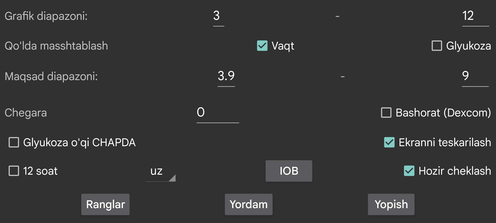

Egri chiziqlar, skanlar va raqamlarning ranglarini o‘zgartiradi. Qorong‘i rejim ni yoqish uchun o‘ng o‘rta menyu→Qorong‘i rejimdan foydalaning.
Past va yuqori qiymat kiriting, shunda ekran pastki qismi eng past qiymatga, yuqori qismi esa eng yuqori qiymatga mos keladi. Bu chegaralar faqat ekranda ko‘rsatilgan barcha glyukoza qiymatlari shu oraliqda bo‘lsa ishlatiladi. Aks holda barcha qiymatlar ko‘rinishi uchun diapazon kengaytiriladi. Masalan, 3 mmol/L (54 mg/dL) dan 9 mmol/L (162 mg/dL) gacha tanlansa va ekranda ko‘rinayotgan barcha qiymatlar 5 mmol/L bilan 6 mmol/L orasida bo‘lsa, grafik glyukoza o‘qini 3 dan 9 gacha ko‘rsatadi.
Agar Glyukozani qo‘lda masshtablash yoqilgan bo‘lsa, buni o‘zingiz ham o‘zgartira olasiz: ekranning yuqori qismida barmoqni yuqori-pastga siljitish grafikning yuqori yarmini, pastki qismida siljitish esa quyi yarmini o‘zgartiradi.
Ekranning yuqori tomoni yuqori qiymatlar osonroq ko‘rinsin deb boshqacha ranglanadi. Past qiymatlar uchun ham xuddi shunday. Juda past tomonni ko‘rsatish uchun qizil chiziq chiziladi.
Grafikdagi glyukoza darajasi raqamlarini ekran chap tomonida ko‘rsatadi. Bu ayniqsa Wear OS’da joriy glyukozani ekran markazida joylashtirmoqchi bo‘lsangiz foydali.
Glyukoza o‘zgarish tezligiga chegara qo‘llaydi. Faqat o‘zgarish tezligi 0 dan ko‘rsatilgan miqdordan ko‘proq farq qilgandagina strelka gorizontal holatdan farqli bo‘ladi. 0 dan 0.8 gacha istalgan qiymat ishlatilishi mumkin. Maqsad — juda kichik o‘zgarishlarga ortiqcha ma’no yuklamaslik. Ko‘rinishda glyukoza sekin ko‘tarilayotgandek tuyulishi mumkin, lekin amalda pasayayotgan bo‘lishi ham mumkin. Threshold ehtiyotkorroq ko‘rsatish uchun ishlatiladi.
Dexcom sensorlari har bir haqiqiy qiymat bilan birga bashorat qilingan qiymatni ham yuboradi. Dexcom G7 oldindan ogohlantirishlari haqida https://www.dexcom.com/g7/how-it-works#alerts sahifasiga qarang. Muallifning kuzatuviga ko‘ra ular 20 daqiqa emas, taxminan 10 daqiqa oldinga surilganda yaxshiroq mos keladi.
Bu parametr yoqilsa, bashorat qilingan qiymatlar Libre sensorlarining tarix qiymatlari ko‘rsatilgandek ko‘rsatiladi. Ularni o‘ng o‘rta menyu→Tarix belgisini olib tashlab yashirish ham mumkin. Juggluco bu qiymatlarni signallar uchun ishlatmaydi; ular faqat bashorat qanchalik mos kelishini ko‘rish uchun ko‘rsatiladi.
Ekranni teskari aylantiradi. Standart holatda bu yoqilgan, chunki aks holda sensorni skanerlash paytida tasodifan OK tugmasi bosilib ketishi mumkin.
Ba’zi foydalanuvchilar portret rejimini so‘rashadi, lekin glyukoza grafigini ko‘rsatish uchun u mos emas deb hisoblangan.
IOB — oldingi insulin dozalari ta’siridan qancha insulin qolganini bildiruvchi ko‘rsatkich. Buning uchun insulin dozalari “tez ta’sir qiluvchi insulin” toifasidagi yorliq ostida kiritilishi kerak. Qaysi yorliqlar shu toifaga tegishli ekanini chap menyu→Sozlamalar→Ma’lumot almashish→Veb server→Miqdorlarni yuborish bo‘limida belgilaysiz.
“Now clamp” yoqilganda ekranda ko‘rsatilayotgan vaqt oralig‘i chapga siljib turadi, shuning uchun hozirgi vaqt doim ekranning bir xil joyida qoladi. Bu Juggluco ni masofadagi kompyuter emulyatorida ishlatadigan foydalanuvchilar uchun qulay: joriy glyukoza qiymati vaqt o‘tishi bilan ekranning o‘ng tomoniga chiqib ketmaydi.
Juggluco tanlangan tilda ko‘rsatiladi. Agar til kodi tanlanmagan bo‘lsa, tizim tili ishlatiladi.